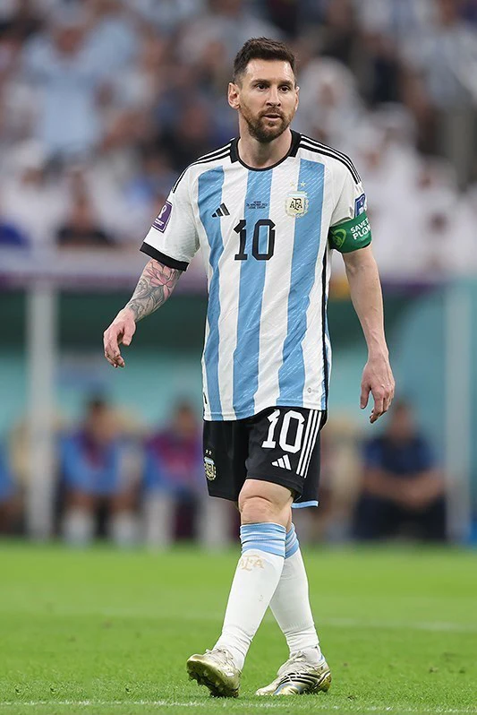

02 / ARGENTINA
La maglia
di una vita.
L’albiceleste è il filo che riporta tutto alle origini. Un percorso di attesa e appartenenza, dalle prime vittorie giovanili alla Coppa del Mondo.

Le radici non si cambiano.
UN LEGAME CHE CRESCE
Prima la promessa.
Poi l’attesa.
Giocare per l’Argentina è un desiderio che accompagna Messi anche negli anni lontano da casa.
Il Mondiale Under 20 del 2005 e l’oro olimpico del 2008 sono i primi grandi successi internazionali. Con la nazionale maggiore, il percorso è più lungo: finali, sconfitte e ritorni trasformano l’attesa in una parte della sua storia.
Il 2021 cambia il racconto. La Copa América conquistata al Maracanã porta il primo grande titolo con la nazionale maggiore. A quella vittoria seguono la Finalissima e il Mondiale del 2022.

COPA AMÉRICA
Finalmente,
insieme.
Il bacio alla coppa racconta il sollievo di un’attesa. L’Argentina torna campione del Sudamerica nel 2021; nel 2024 conquista di nuovo il torneo.
Le vittorie con l’Argentina18 DICEMBRE 2022 · LUSAIL
La notte
che resta.
Argentina e Francia. Una finale che cambia direzione più volte, fino ai rigori.
Messi segna due gol nella finale. Dopo il 3–3 dei supplementari, l’Argentina vince la serie dal dischetto e conquista la Coppa del Mondo. Il capitano riceve anche il premio di miglior giocatore del torneo.
- Gol nel torneo
- 7
- Assist nel torneo
- 3
- Premio individuale
- Golden Ball

LE TAPPE DELLE VITTORIE
Una storia
in sei momenti.
- 2005
Mondiale Under 20
La prima grande vittoria internazionale.
- 2008
Oro olimpico
Il successo dell’Argentina ai Giochi di Pechino.
- 2021
Copa América
La nazionale maggiore vince al Maracanã.
- 2022
Finalissima
L’Argentina supera l’Italia a Wembley.
- 2022
Coppa del Mondo
Il trionfo di Lusail contro la Francia.
- 2024
Copa América
Un nuovo titolo continentale.